Invited speakers
Rice University
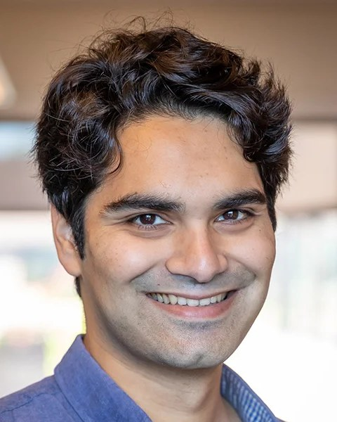
Vir Bulchandani
Condensed-matter theory
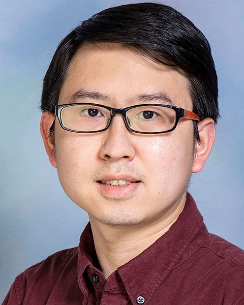
Songtao Chen
Experimental solid-state circuit QED
Kaden Hazzard
Atomic, molecular, and optical physics; quantum theory
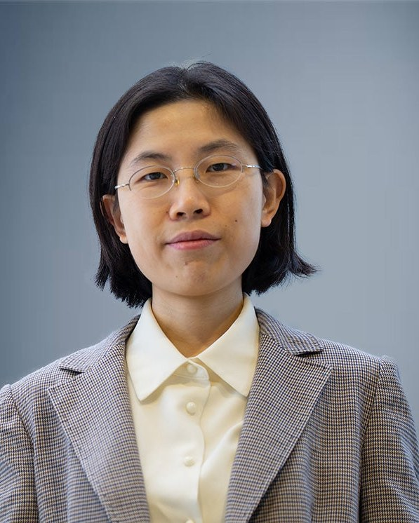
Shengxi Huang
Title to be announced
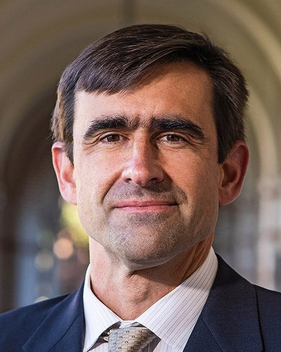
Tom Killian
Title to be announced
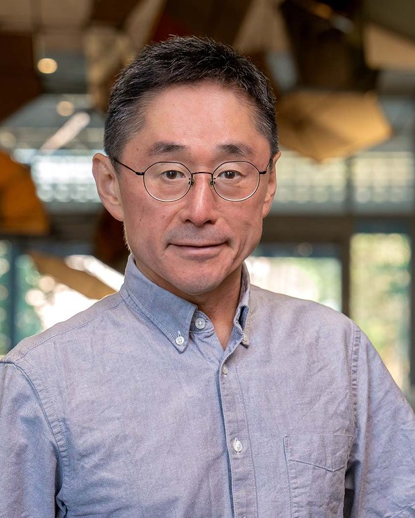
Jun Kono
Title to be announced
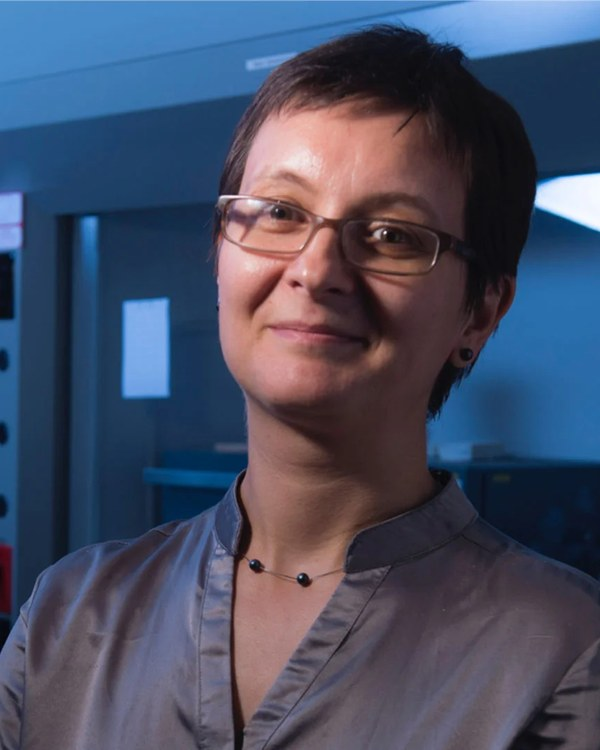
Emilia Morosan
Title to be announced
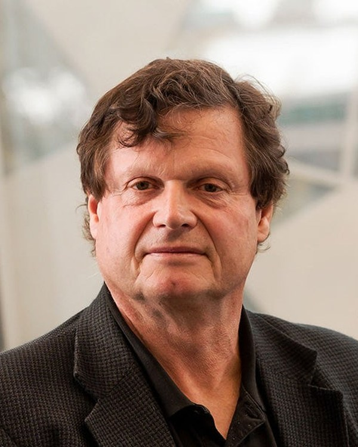
Peter Nordlander
Title to be announced
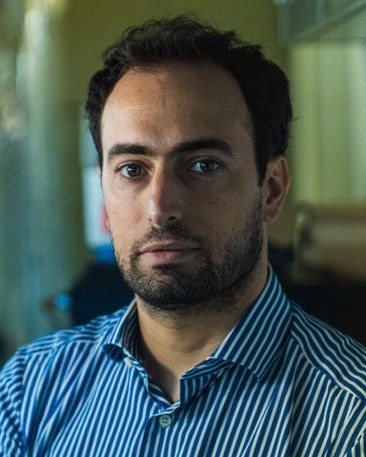
Guido Pagano
Trapped-ion experiments
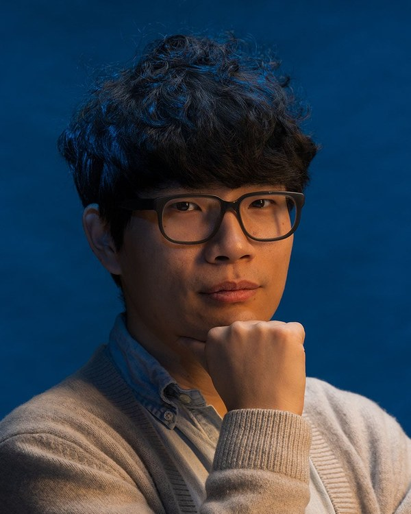
Yonglong Xie
Experimental condensed-matter physics
Sungkyunkwan University
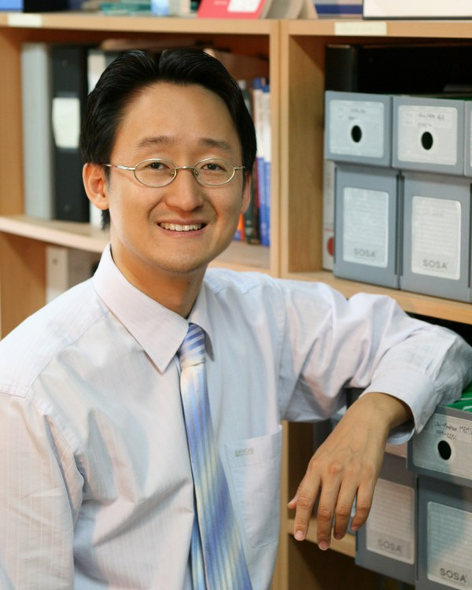
Seunghyun Baik
Advanced Thermal Management Technology Using Nanocomposites
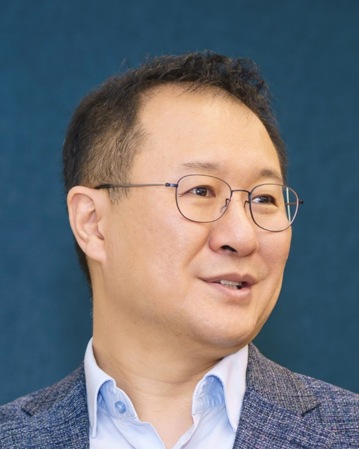
Yonuk Chong
Superconducting Quantum Information Research Lab (SQuIRL) at SKKU – Qubit, Para-Amp, SNSPD
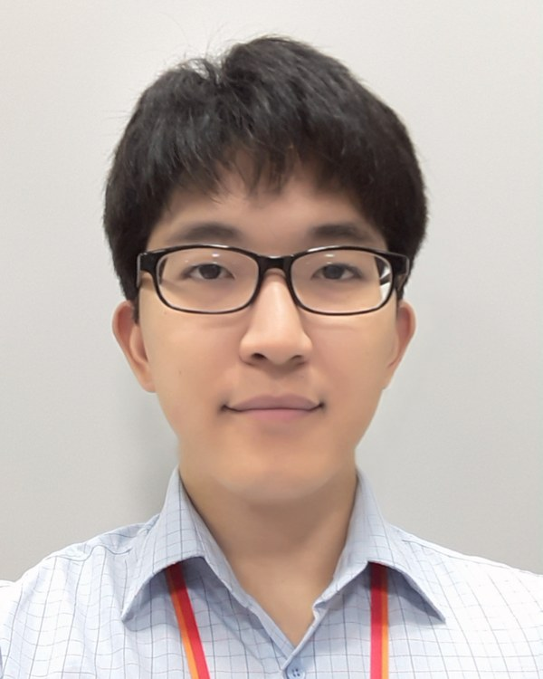
Junki Kim
Quantum Engineering with Trapped Ions
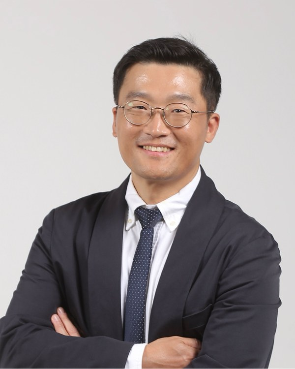
Youngkuk Kim
Quantum Materials Research in the Department of Physics at SKKU
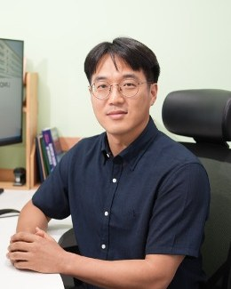
Hosung Seo
Predicting Quantum Decoherence in Solid-State Spin Qubits: From Atomistic Defects to Quantum Devices
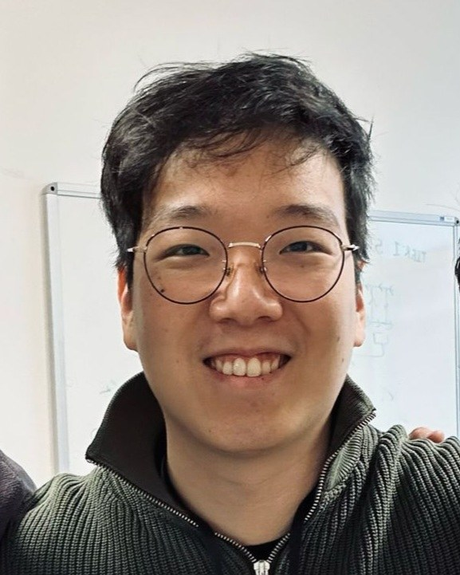
Sang-Hee Shin
Cryogenic RF and Microwave Research for Quantum Computing